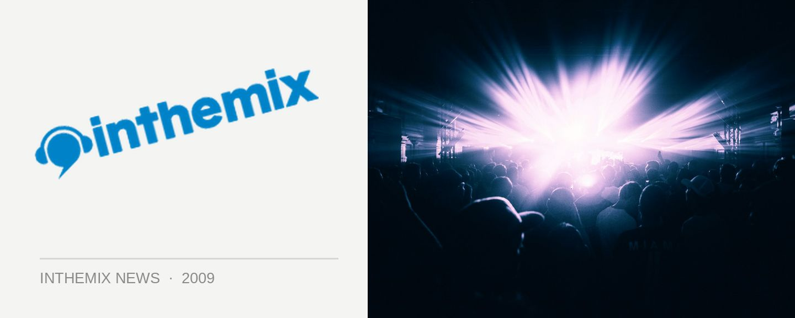

Lee Coombs 'Light & Dark' tour of Australia
Lee Coombs has been one of the driving forces behind the ‘tech-funk’ approach to DJing and producing, one that knocks down the genre barriers and takes in breaks, house, electro and techno in equal measures, and in late October he’ll be back in Australia for a tour where he’ll be playing live in support of his new album Light and Dark, which is out shortly of Lot49.
Coombs has been working on Light and Dark for nearly two years now, and it’s a change of tact in that there’s a bit of a retrospective angle going on, where he looks back through the history of electronic music and tries to meld it with his approach of the present. Think dirty old-school analogue sounds, brought together with the big techy sounds that Coombs is known for.
We’ll be seeing Coombs recreate the album live on the dancefloor during his tour, as well as a heap of other music new productions he says he’s made specifically to play live, and maybe a few sneaky new remixes too.
Lee Coombs ‘Light & Dark’ tour dates:
Friday 30th Oct – Destination? @ 202 Broadway, Sydney
Sat 31st Oct – Halo, Hobart
Fri 6th Nov – Brown Alley, Melbourne
Sat 7th Nov – Villa, Perth
Thu 12th Nov – La La Land, Byron Bay, NSW
Sat 14th Nov – Empire, Brisbane